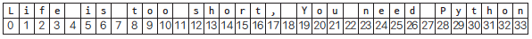
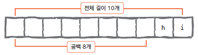
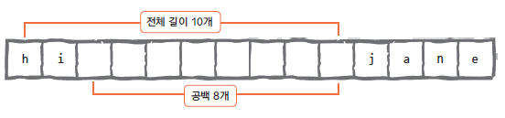
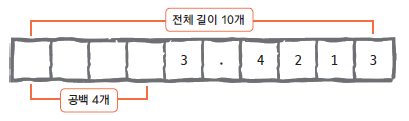

a = 123
a = -178
a = 2.0
print(a)2.0이번 실습에서는 python programining 기초에 대해서 학습 할 예정이다.
기본적인 코딩 실습을 통해 파이썬 프로그램 코딩에 익숙해지는 단계이다.
이번 강의에서는 LMS에 강의자료 활용모든 런타임 재설정 이 뜰 텐데 예를 눌러준다.쉽게 실행보는법을 따라왔다면 Colab에서 임시 노트북으로 열리기 때문에 파일->드라이브로 저장을 눌러서 여러분의 구글 드라이브에 저장하거나 파일 -> .ipynb 다운로드를 눌러서 다운로드 해준다.
| 단축키 | 기능 |
|---|---|
| ESC | 코드모드에서 명령모드로 전환 |
| enter | 명령모드에서 코드모드로 전환 |
| m | 코드셀에서 마크다운셀로 변경 |
| y | 마크다운셀에서 코드셀로 변경 |
| a | 현재 셀 위로 셀추가 |
| b | 현재 셀 아래로 셀추가 |
| dd | 셀삭제 |
| shift + 엔터 | 셀 실행 후 다음 셀로 이동 |
| ctrl + 엔터 | 셀 실행 후 셀에 계속 머물기 |
| ctrl + shift + - | 화면창키우기 |
| ctrl + s | 저장 |
| 항목 | 파이썬 사용 예 |
|---|---|
| 정수 | 123, -345, 0 |
| 실수 | 123.45, -1234.5, 3.4e10 |
| 8진수 | 0o34, 0o25 |
| 16진수 | 0x2A, 0xFF |
a = 123
a = -178
a = 2.0
print(a)2.0# 직접 실습을 해보세요.
c = 12/3
print(c)4.0# 직접 실습을 해보세요. 파이썬에서 실수형(Floating-point)은 소수점이 포함된 숫자
a = 1.2
a = -3.45a = 1.3
b = 5.2
c = a + b
print(c)6.5# 직접 실습을 해보세요. 다음은 ’컴퓨터식 지수 표현 방식’으로, 파이썬에서는 4.24e10 또는 4.24E10처럼 표현한다
(e와 E 둘 중 어느 것을 사용해도 된다).
a = 4.24E10
a = 4.24e-104.24e-108진수(octal)를 만들기 위해서는 숫자가 0o 또는 0O (숫자 0 + 알파벳 소문자 o 또는 대문자 O)으로 시작
a = 0o177
print(a)1270o177 = 1 X 8^2 + 7 X 8 ^1 + 7 X 8^0
16진수(hexadecimal)를 만들기 위해서는 0x로 시작하면 된다.
a = 0x8ff
b = 0xABC
print(b)
2748274827480x8ff = ?
8진수와 16진수는 있다는 있다는 것만 숙지하면 됨
프로그래밍을 한 번도 해 본 적이 없는 학생이라도 사칙 연산(+, -, *, /)은 알고 있을 것이다.
파이썬 역시 계산기와 마찬가지로 다음처럼 연산자를 사용해 사칙 연산을 수행한다.
a = 3
b = 4
print(a + b)
print(a - b)
print(a * b)
print(a / b)7
-1
12
0.75다음으로 알아야 할 연산자로 **라는 연산자가 있다.
이 연산자는 x ** y처럼 사용했을 때 x의 y제곱() 값을 리턴한다.
다음 예를 통해 알아보자.
a = 3
b = 4
print(a ** b)81# 직접 실습을 해보세요. 프로그래밍을 처음 접하는 학생이라면 % 연산자는 본 적이 없을 것이다.
%는 나눗셈의 나머지 값을 리턴하는 연산자이다.
7을 3으로 나누면 나머지는 1, 3을 7로 나누면 나머지는 3이 될 것이다. 다음 예로 확인해 보자.

7 % 313 % 73# 직접 실습해보기/ 연산자를 사용하여 7 나누기 4를 하면 그 결과는 예상대로 1.75가 된다.
7/41.757//41# 직접 실습해보기문자열(string)이란 문자, 단어 등으로 구성된 문자들의 집합을 말한다.
예를 들면 다음과 같다.
“Life is too short, You need Python”
“a”
“123”
문자열을 만들어 주는 주인공은 작은따옴표(’)와 큰따옴표(“)이다.
그런데 문자열 안에도 작은따옴표와 큰따옴표가 들어 있어야 할 경우가 있다.
이때는 좀 더 특별한 기술이 필요하다.
예제를 하나씩 살펴보면서 원리를 익혀 보자.
food= "Python's favorite food is perl"food"Python's favorite food is perl"food= "Python's favorite food is perl"
food"Python's favorite food is perl"’Python’이 문자열로 인식되어 구문 오류(Syntax Error)가 발생
say = '"Python is very easy." he says.'say'"Python is very easy." he says.'food = 'Python\'s favorite food is perl'
food"Python's favorite food is perl"say = "\"Python is very easy.\" he says."작은따옴표나 큰따옴표를 문자열에 포함시키는 또 다른 방법은 역슬래시(\)를 사용하는 것이다.
즉, 역슬래시를 작은따옴표나 큰따옴표 앞에 삽입하면 역슬래시 뒤의 작은따옴표나 큰따옴표는 문자열을 둘러싸는 기호의 의미가 아니라 ’ 나 혹은 ” 자체를 뜻하게 된다.
어떤 방법을 사용해서 문자열 안에 작은따옴표(’)와 큰따옴표(“)를 포함시킬 것인지는 각자의 선택이다.
대화형 인터프리터를 실행한 후 위 예문을 꼭 직접 작성해 보자.
food"Python's favorite food is perl"print(say)"Python is very easy." he says.multiline = "Life is too short\nYou need python"print(multiline)Life is too short
You need pythonmultiline='''
Life is too short
You need python
OK?
'''print(multiline)
Life is too short
You need python
OK?
| 코드 | 설명 |
|---|---|
| 문자열 안에서 줄을 바꿀 때 사용 | |
| 문자열 사이에 탭 간격을 줄 때 사용 | |
| \ | 를 그대로 표현할 때 사용 |
| \’ | 작은따옴표(’)를 그대로 표현할 때 사용 |
| \” | 큰따옴표(“)를 그대로 표현할 때 사용 |
| 캐리지 리턴(줄 바꿈 문자, 커서를 현재 줄의 가장 앞으로 이동) | |
| 폼 피드(줄 바꿈 문자, 커서를 현재 줄의 다음 줄로 이동) | |
| 벨 소리(출력할 때 PC 스피커에서 ‘삑’ 소리가 난다) | |
| 백 스페이스 | |
| \000 | 널 문자 |
이 중에서 활용 빈도가 높은 것은 , \, ', "이다
파이썬에서는 문자열을 더하거나 곱할 수 있다.
이는 다른 언어에서는 쉽게 찾아볼 수 없는 재미있는 기능으로, 우리 생각을 그대로 반영해 주는 파이썬만의 장점이라고 할 수 있다.
문자열을 더하거나 곱하는 방법에 대해 알아보자.
head = "Python"
tail = " is fun!"
head + tail'Python is fun!'a = "python"
a * 2'pythonpython'print("=" * 50)
print("My Program")
print("=" * 50)==================================================
My Program
==================================================문자열의 길이는 다음과 같이 len 함수를 사용하면 구할 수 있다.
len 함수는 print 함수처럼 파이썬의 기본 내장 함수로, 별다른 설정 없이 바로 사용할 수 있다.
문자열의 길이에는 공백 문자도 포함된다.
a = "Life is too short"
len(a)17인덱싱(indexing) 이란 무엇인가를 ‘가리킨다’,
슬라이싱(slicing)은 무엇인가를 ’잘라 낸다’라는 의미이다.
이런 의미를 생각하면서 다음 내용을 살펴보자.
a = "Life is too short, You need Python"a = "Life is too short, You need Python"
a[3]'e'
a = "Life is too short, You need Python"
a[3]'e'a[3]이 뜻하는 것은 a라는 문자열의 네 번째 문자 e를 말한다.
프로그래밍을 처음 접하는 학생이라면 a[3]에서 숫자 3이 왜 네 번째 문자를 뜻하는지 의아할 수도 있다.
사실 이 부분이 헷갈릴 수 있는 부분인데, 다음과 같이 생각하면 쉽게 알 수 있을 것이다.
"파이썬은 0부터 숫자를 센다."
따라서 파이썬은 위 문자열을 다음과 같이 바라보고 있다.
a[0]:'L', a[1]:'i', a[2]:'f', a[3]:'e', a[4]:' ', ...
인덱싱의 예를 몇 가지 더 살펴보자.
a = "Life is too short, You need Python"
a[4]
#a[-1]' '# 추가로 연습해보기문자열을 뒤에서부터 읽기 위해 -(빼기) 기호를 붙인 것이다.
즉, a[-1]은 뒤에서부터 세어 첫 번째가 되는 문자를 말한다.
a의 값은 “Life is too short, You need Python” 문자열이므로 뒤에서부터 첫 번째 문자는 가장 마지막 문자 ’n’이다.
뒤에서부터 첫 번째 문자를 표시할 때도 0부터 세어 ’a[-0]이라고 해야 하지 않을까?’라는 의문이 들 수도 있겠지만,
잘 생각해 보자. 0과 -0은 똑같은 것이기 때문에 a[-0]은 a[0]과 똑같은 값을 보여 준다.
a[-0]'L'a[-2]
a[-5]
그렇다면 “Life is too short, You need Python” 문자열에서 단순히 한 문자만을 뽑아 내는 것이 아니라
‘Life’ 또는 ’You’와 같은 단어를 뽑아 내는 방법은 없을까?
다음과 같이 하면 된다.
a = "Life is too short, You need Python"
b = a[0] + a[1] + a[2] + a[3]
b'Life'위와 같이 단순하게 접근할 수도 있지만 파이썬에서는 더 좋은 방법을 제공한다.
바로 슬라이싱slicing 기법이다.
위 예는 슬라이싱 기법으로 다음과 같이 간단하게 처리할 수 있다.
인덱싱 기법과 슬라이싱 기법은 뒤에서 배울 자료형인 리스트나 튜플에서도 사용할 수 있다.
a = "Life is too short, You need Python"
a[0:4]'Life'‘a[0]은 L, a[1]은 i, a[2]는 f, a[3]은 e이므로 a[0:3]으로도 Life라는 단어를 뽑아 낼 수 있지 않을까?’ 라는 의문
a[0:3]'Lif'이렇게 되는 이유는 슬라이싱 기법으로 a[시작_번호:끝_번호]를 지정할 때 끝 번호에 해당하는 문자는 포함하지 않기
0 <= a < 3
“Life is too short, You need Python”
a[0:2] a[5:7] a[12:17]
a[시작_번호:끝_번호]에서 끝 번호 부분을 생략하면 시작 번호부터 그 문자열의 끝까지 뽑아 낸다.
# need를 빼오기
a[-11:-7]'need'a[19:]'You need Python'a[시작_번호:끝_번호]에서 시작 번호를 생략하면 문자열의 처음부터 끝 번호까지 뽑아 낸다.
a[:17]'Life is too short'a[시작_번호:끝_번호]에서 시작 번호와 끝 번호를 생략하면 문자열의 처음부터 끝까지 뽑아 낸다.
a[:]'Life is too short, You need Python'슬라이싱에서도 인덱싱과 마찬가지로 -(빼기) 기호를 사용할 수 있다.
a[19:-7]'You need'# "Life is too short, You need Python"
a[-22: -17]'short'a[19:-7]은 a[19]에서 a[-8]까지를 의미한다. 이때에도 a[-7]은 포함하지 않는다.
다음은 자주 사용하는 슬라이싱 기법 중 하나이다.
a = "20230331Rainy"
date = a[:8]
weather = a[8:]
print(date)
print(weather)20230331
Rainyyear = date[:4]
month = date[4:6]
day = date[6:8]
print(year)
print(month)
print(day)2023
03
31Pithon 문자열을 Python으로 바꾸려면 어떻게 해야 할까? 제일 먼저 떠오르는 생각은 다음과 같을 것이다.
a = "Pithon"
a[1]
a[1] = 'y'--------------------------------------------------------------------------- TypeError Traceback (most recent call last) Cell In[1], line 3 1 a = "Pithon" 2 a[1] ----> 3 a[1] = 'y' TypeError: 'str' object does not support item assignment
즉, a 변수에 “Pithon” 문자열을 대입하고 a[1]의 값이 i이므로 a[1]을 y로 바꾸어 준다는 생각이다.
하지만 결과는 어떻게 나올까? 당연히 오류가 발생한다.
문자열의 요솟값은 바꿀 수 있는 값이 아니기 때문이다 (그래서 문자열을 변경 불가능한 immutable 자료형 이라고도 부른다).
하지만 앞에서 배운 슬라이싱 기법을 사용하면 Pithon 문자열을 사용해 Python 문자열을 만들 수 있다. 다음 예를 살펴보자.
a = "Pithon"
a[:1]
a[2:]
a[:1] + 'y' + a[2:]'Python'문자열에서 또 하나 알아야 할 것으로는 문자열 포매팅(string formatting)이 있다.
문자열 포매팅을 공부하기 전에 다음과 같은 문자열을 출력하는 프로그램을 작성했다고 가정해 보자.
시간이 지나서 20도가 되면 다음 문장을 출력한다.
두 문자열은 모두 같은데 20이라는 숫자와 18이라는 숫자만 다르다.
이렇게 문자열 안의 특정한 값을 바꿔야 할 경우가 있을 때 이것을 가능하게 해 주는 것이 바로 문자열 포매팅이다.
"I eat %d apples." % 3'I eat 3 apples.'"I eat %d apples." % 7'I eat 7 apples.'문자열 안에 꼭 숫자만 넣으라는 법은 없다. 이번에는 숫자 대신 문자열을 넣어 보자.
"I eat %s apples." % "seven"'I eat seven apples.'문자열 안에 또 다른 문자열을 삽입하기 위해 앞에서 사용한 문자열 포맷 코드 %d가 아닌 %s를 썼다.
숫자를 넣기 위해서는 %d, 문자열을 넣기 위해서는 %s를 써야 한다는 사실
number = 4
"I eat %d apples." % number'I eat 4 apples.'number = 12
day = "three"
"I ate %d apples. so I was sick for %s days." % (number, day)'I ate 10 apples. so I was sick for three days.'# 추가로 연습해보기~~
per = 99.9845454
"Error is %f%%" % per'Error is 99.984545%'문자열 포매팅 예제에서는 대입해 넣는 자료형으로 정수와 문자열을 사용했지만, 이 밖에도 다양한 것을 대입할 수 있다.
문자열 포맷 코드의 종류는 다음과 같다.
| 코드 | 설명 |
|---|---|
| %s | 문자열(String) |
| %c | 문자 1개(character) |
| %d | 정수(Integer) |
| %f | 부동소수(floating-point) |
| %o | 8진수 |
| %x | 16진수 |
| %% | Literal % (문자 % 자체) |
여기에서 재미있는 것은 %s 포맷 코드인데, 이 코드에는 어떤 형태의 값이든 변환해 넣을 수 있다
"I have %s apples" % 3'I have 3 apples'"rate is %s" % 3.234'rate is 3.234'"Error is %d%." % 98--------------------------------------------------------------------------- ValueError Traceback (most recent call last) Cell In[18], line 1 ----> 1 "Error is %d%." % 98 ValueError: incomplete format
결괏값으로 당연히 “Error is 98%.”가 출력될 것이라고 예상하겠지만,
파이썬은 ’형식이 불완전하다’라는 오류 메시지를 보여 준다.
그 이유는 ’문자열 포맷 코드인 %d와 %가 같은 문자열 안에 존재하는 경우, %를 나타내려면 반드시 %%를 써야 한다’라는 법칙이 있기 때문이다.
이 점은 꼭 기억해 두어야 한다. 하지만 문자열 안에 %d와 같은 포매팅 연산자가 없으면 %는 홀로 쓰여도 상관없다.
따라서 위 예를 제대로 실행하려면 다음과 같이 작성해야 한다.
"Error is %d%%." % 98'Error is 98%.'앞에서 살펴보았듯이 %d, %s 등과 같은 포맷 코드는 문자열 안에 어떤 값을 삽입할 때 사용한다.
하지만 포맷 코드를 숫자와 함께 사용하면 더 유용하다.
다음 예를 따라해 보자.
"%10s" % "hi"' hi'%10s는 전체 길이가 10개인 문자열 공간에서 대입되는 값을 오른쪽으로 정렬하고 그 앞의 나머지는 공백으로 남겨 두라는 의미이다.

그렇다면 반대쪽인 왼쪽 정렬은 %-10s가 될 것이다
len("%-10s" % "hi" "%10s" % "hi")16left_aligned = "%-10s" % "hi"
right_aligned = "%10s" % "hi"
combined = left_aligned + right_aligned
length = len(combined)
print(f"'{left_aligned}'의 길이: {len(left_aligned)}")
print(f"'{right_aligned}'의 길이: {len(right_aligned)}")
print(f"결합된 문자열: '{combined}'")
print(f"결합된 문자열의 길이: {length}")'hi '의 길이: 10
' hi'의 길이: 10
결합된 문자열: 'hi hi'
결합된 문자열의 길이: 20"%-10sjane." % 'hi''hi jane.'
"%0.4f" % 3.42134234'3.4213'3.42134234를 소수점 네 번째 자리까지만 나타내고 싶은 경우에는 위와 같이 작성한다.
%0.4f에서 ’.’는 소수점 포인트, 그 뒤의 숫자 4는 소수점 뒤에 나올 숫자의 개수를 말한다.
소수점 포인트 앞의 숫자는 문자열의 전체 길이를 의미하는데, %0.4f에서 사용한 숫자 0은 길이에 상관하지 않겠다는 의미이다.
%0.4f는 0을 생략하여 %.4f처럼 사용하기도 한다.
다음 예를 살펴보자.
"%10.4f" % 3.42134234' 3.4213'
문자열의 format 함수를 사용하면 좀 더 발전된 스타일로 문자열 포맷을 지정할 수 있다.
앞에서 살펴본 문자열 포매팅 예제를 format함수를 사용해서 바꾸면 다음과 같다.
"I eat {0} apples".format(3)'I eat 3 apples'"I eat {0} apples"'I eat {0} apples'"I eat {0} apples".format("five")'I eat five apples'문자열의 {0} 항목이 ’five’라는 문자열로 바뀌었다.
number = 3
"I eat {0} apples".format(number)'I eat 3 apples'문자열의 {0} 항목이 number 변수의 값인 3으로 바뀌었다.
number = 10
day = "three"
"I ate {0} apples. so I was sick for {1} days.".format(number, day)'I ate 10 apples. so I was sick for three days.'"I ate {number} apples. so I was sick for {day} days.".format(number=10, day=3)'I ate 10 apples. so I was sick for 3 days.'"I ate {number} apples. so I was sick for {day} days.".format( day=3,number=10)'I ate 10 apples. so I was sick for 3 days.'{0}, {1}과 같은 인덱스 항목 대신 더 편리한 {name} 형태를 사용하는 방법도 있다.
{name} 형태를 사용할 경우, format 함수에는 반드시 name=value와 같은 형태의 입력값이 있어야 한다.
위 예는 문자열의 {number}, {day}가 format 함수의 입력값인 number=10, day=3 값으로 각각 바뀌는 것을 보여 주고 있다.
"I ate {0} apples. so I was sick for {day} days.".format(10, day=3)'I ate 10 apples. so I was sick for 3 days.'"{0:<10}".format("hi")'hi '오른쪽 정렬은 :< 대신 :>을 사용하면 된다. 화살표의 방향을 생각하면 어느 쪽으로 정렬되는지 바로 알 수 있을 것이다.
"{0:>10}".format("hi")' hi'가운데 정렬
"{0:^10}".format("hi")' hi '"{0:=^10}".format("hi")'====hi===='"{0:!<10}".format("hi")'hi!!!!!!!!'정렬할 때 공백 문자 대신 지정한 문자 값으로 채워 넣을 수도 있다.
채워 넣을 문자 값은 정렬 문자 <, >, ^ 바로 앞에 넣어야 한다.
위 예에서 첫 번째 예제는 가운데(^)로 정렬하고 빈 공간을 =로 채웠고, 두 번째 예제는 왼쪽(<)으로 정렬하고 빈 공간을 !로 채웠다.
y = 3.42134234
"{0:0.4f}".format(y)'3.4213'{ 또는 } 문자 표현하기
"{{ and }}".format()'{ and }'"{{ and }}".format("but")'{ and }'f 문자열 포매팅파이썬 3.6 버전부터는 f 문자열 포매팅 기능을 사용할 수 있다.
파이썬 3.6 미만 버전에서는 사용할 수 없는 기능이므로 주의해야 한다.
다음과 같이 문자열 앞에 f 접두사를 붙이면 f 문자열 포매팅 기능을 사용할 수 있다.
name = '김수환'
age = 25
f'나의 이름은 {name}입니다. 나이는 {age}입니다.''나의 이름은 김수환입니다. 나이는 25입니다.'f 문자열 포매팅은 위와 같이 name, age와 같은 변숫값을 생성한 후에 그 값을 참조할 수 있다.
또한 f 문자열 포매팅은 표현식을 지원하기 때문에 다음과 같은 것도 가능하다.
표현식이란 중괄호 안의 변수를 계산식과 함께 사용하는 것을 말한다.
f'나는 내년이면 {age + 1}살이 된다.''나는 내년이면 26살이 된다.'딕셔너리는 f 문자열 포매팅에서 다음과 같이 사용할 수 있다.
d = {'name':'홍길동', 'age':30}
f'나의 이름은 {d["name"]}입니다. 나이는 {d["age"]}입니다.'
#d는 딕셔너리에서 사용가능한 문법이다.'나의 이름은 홍길동입니다. 나이는 30입니다.'# 본인 이름과 나이로 포매팅 해보기dic={'name':'김수환', 'age':25, 'job':'student', 'hobby':'soccer'}
f'나의 이름은 {dic["name"]}입니다. 나이는 {dic["age"]}입니다. 직업은 {dic["job"]}입니다. 취미는 {dic["hobby"]}입니다.''나의 이름은 김수환입니다. 나이는 25입니다. 직업은 student입니다. 취미는 soccer입니다.'딕셔너리는 Key와 Value라는 것을 한 쌍으로 가지는 자료형이다.
다음 강의에서 학습 예정
f'{"hi":<10}' # 왼쪽 정렬'hi 'f'{"hi":>10}' # 오른쪽 정렬' hi'f'{"hi":^10}' # 가운데 정렬' hi '공백 채우기는 다음과 같이 할 수 있다.
f'{"hi":=^10}' # 가운데 정렬하고 '=' 문자로 공백 채우기'====hi===='f'{'hi':=>10}''========hi'f'{"hi":!<10}' # 왼쪽 정렬하고 '!' 문자로 공백 채우기'hi!!!!!!!!'f'{"job":<10}''job 'y = 3.42134234
f'{y:0.4f}' # 소수점 4자리까지만 표현'3.4213'f'{y:10.4f}' # 소수점 4자리까지 표현하고 총 자리수를 10으로 맞춤' 3.4213'#전체 자리수는 15개, 소수점은 2개
f'{y:15.2f}'' 3.42'문자열 자료형은 자체적으로 함수를 가지고 있다.
이들 함수를 다른 말로 문자열 내장함수라고 한다.
이 내장 함수를 사용하려면 문자열 변수 이름 뒤에 '.'를 붙인 후 함수 이름을 써 주면 된다.
이제 문자열의 내장 함수에 대해서 알아보자.
a = "hobby"
a.count('b')2a.count('y')1count 함수로 문자열 중 문자 b의 개수를 리턴했다.
a = "Python is the best choice"
a.find('b')14a.find('k')-1find 함수로 문자열 중 문자 b가 처음으로 나온 위치를 반환했다.
파이썬은 숫자를 0부터 세기 때문에 b의 위치는 15가 아닌 14가 된다.
만약 찾는 문자나 문자열이 존재하지 않는다면 -1을 반환한다.
a = "Life is too short"
a.index('t')8a.index('k')--------------------------------------------------------------------------- ValueError Traceback (most recent call last) Cell In[12], line 1 ----> 1 a.index('k') ValueError: substring not found
",".join('abcd')'a,b,c,d'join 함수는 문자열뿐만 아니라 앞으로 배울 리스트나 튜플도 입력으로 사용할 수 있다
(리스트와 튜플은 곧 배울 내용이므로 여기에서는 잠시 눈으로만 살펴보자).
join 함수의 입력으로 리스트를 사용하는 예는 다음과 같다.
",".join(['a', 'b', 'c', 'd'])'a,b,c,d'a = "hi"
a.upper()'HI'a = “HI” a.lower()
a = " hi "
a.lstrip()'hi 'a= " hi "
a.rstrip()a = " hi "
a.strip()'hi'a = "Life is too short"
a.replace("Life", "Your leg")'Your leg is too short'a.replace("short", "long")'Life is too long'#### 문자열 나누기 - split
a = "Life is too short"
a.split()['Life', 'is', 'too', 'short']b = "a:b:c:d"
b.split(':')['a', 'b', 'c', 'd']Bad pipe message: %s [b'0.9,image/avif,image/webp,image/apng,*/*;q=0.8,application/signed-exchange;v=b3;q=0.7\r\nHost: localhost:40697\r\nUs', b'-Agent: Mozilla/5.0 (Windows NT 10.0; Win64; x64) AppleWebKit/537.36 (KHTML, like Gecko) Chrome/128.']
Bad pipe message: %s [b'0.0 Safari/537.36 Edg/128.0.0.0\r\nAccept-Encodin']
Bad pipe message: %s [b' gzip, deflate, br, zstd\r\nAccept-Language: ko,en;q=0.9,en-US;q=0.8\r\nCache-Control: max-age=0\r\nReferer:']
Bad pipe message: %s [b'ttps://github.com/\r\nX-Request-I']
Bad pipe message: %s [b' 6ac27bd60fe1fb3b2a25653de524f81e\r\nX-Real-IP: 10.240.2.23\r\nX-Forwar']
Bad pipe message: %s [b'd-Port: 443\r\nX-Forwarded-Scheme: https\r\nX-Original-URI: /\r\nX-Scheme: https\r\nsec-fetch-site: cross-s', b'e\r\nsec-fetch-mode: navigate\r\nsec-fetch-dest: document\r\nsec-ch-ua: "Chromium";v="128", "Not;A=Brand";v="2']
Bad pipe message: %s [b', "Microsoft Edge";v="128"\r\nsec-ch-ua-mobile: ?0\r\ns']
Bad pipe message: %s [b'-ch-ua-platform: "Windows"\r\npriority: u=0, i\r\nX-Original-Proto: https\r\nX-Forwarded-Proto: https\r\nX-F', b'warded-Host: fictional-space-umbrella-xjw4v6rp96whpq5-40697.app.github.dev\r\nX-Forwarded-For: 10.240.2.23\r\nProx']a = 'hi'
a.upper()'HI'print(a)hia.upper()를 수행하더라도 a 변수의 값은 변하지 않았다.
왜냐하면 a.upper()를 실행하면 upper 함수는 a 변수의 값 자체를 변경하는 것이 아니라 대문자로 바꾼 값을 리턴하기 때문이다.
문자열은 이전에도 잠깐 언급했지만 자체의 값을 변경할 수 없는 immutable 자료형이다.
따라서 a 값을 ‘HI’ 로 바꾸고 싶다면 다음과 같이 대입문을 사용해야 한다.
a = a.upper()
print(a)HI점프투 파이썬 from Wididocs